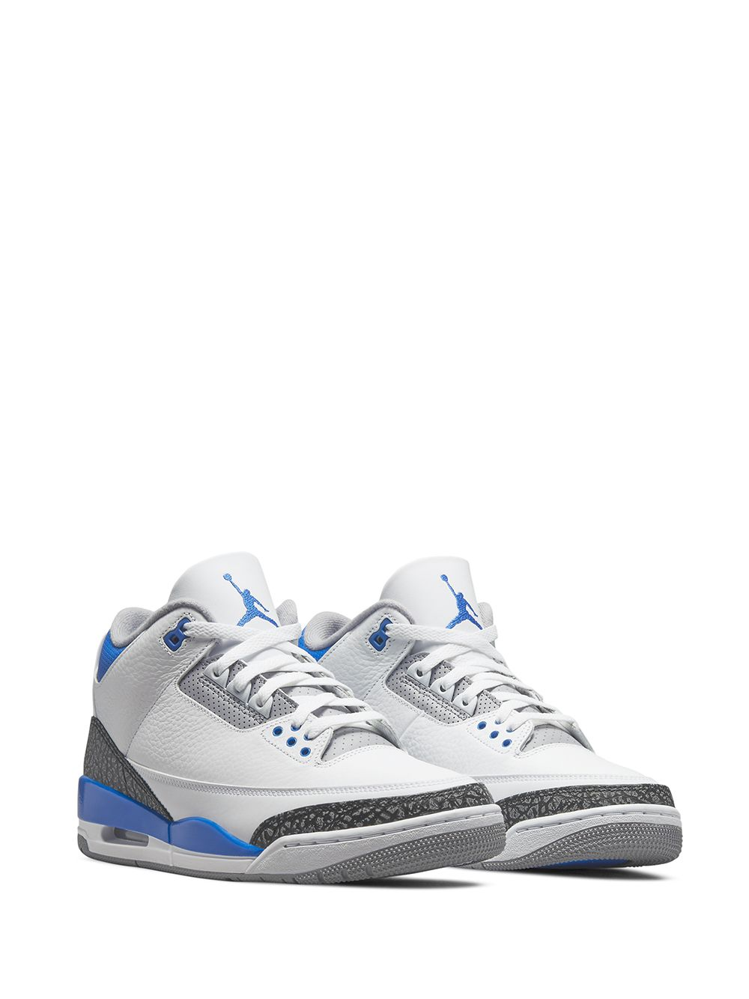
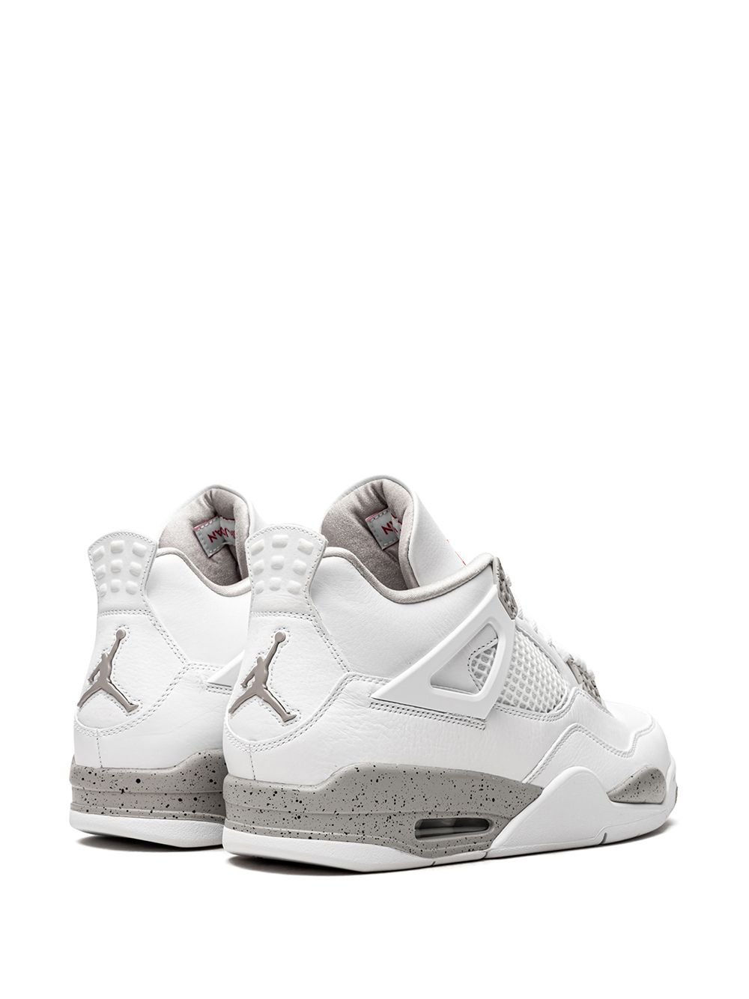
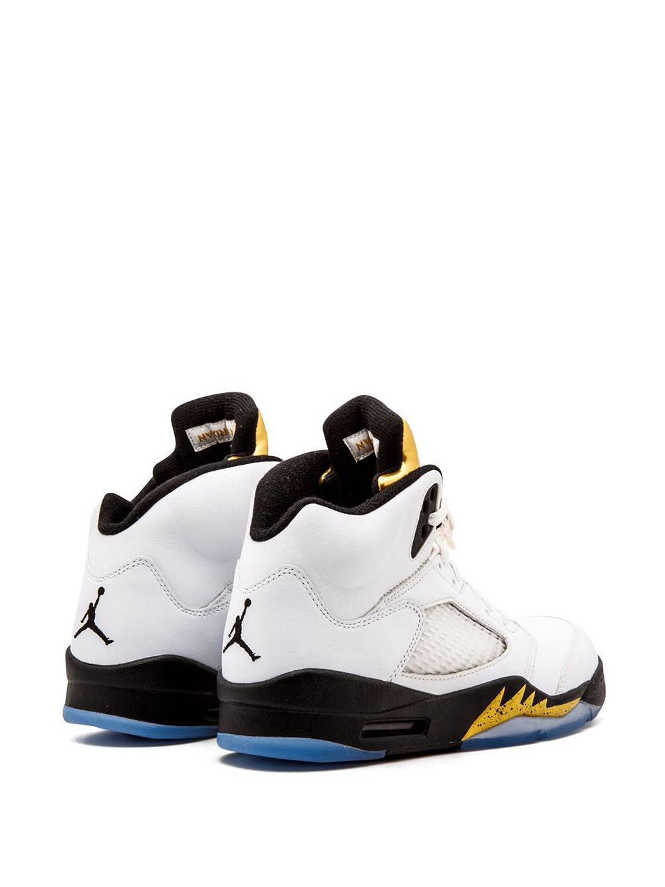
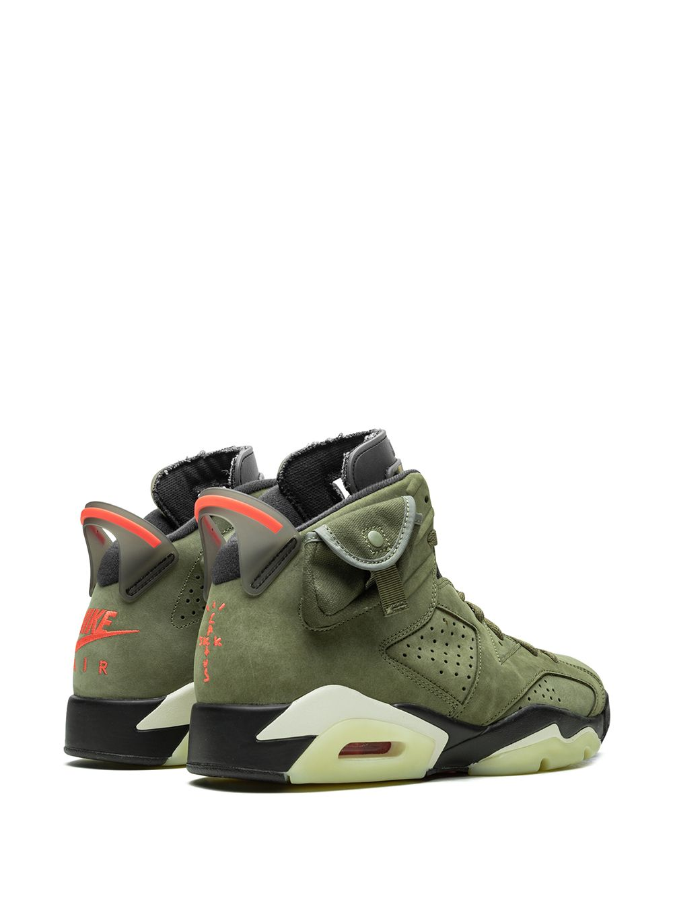
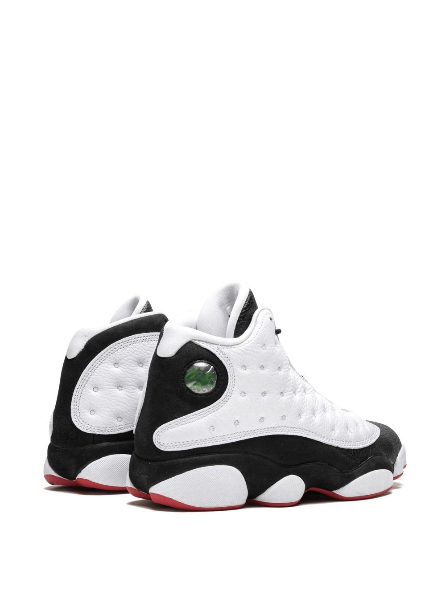

Supplied by a premier sneaker marketplace dealing with unworn, already sold out, in
demand rarities. Each product is rigorously inspected by experienced experts
guaranteeing authenticity. The Union x Air Jordan 1 "Storm Blue" is one of two
special editions of Michael Jordan's first signature shoe from the Los Angeles
menswear boutique. The cut and paste theme of the collaboration by Union combines
two original colorways of the Air Jordan 1 into one shoe. For the "Storm Blue"
colorway, the design combines the body of the original white and blue version with
the red and black ankle of the “Bred” colorway. The colorway has a vintage look with
yellowed leather that has a distressed treatment around the ankle paneling. A
“UN/LA” patch is added to each ankle to complete the unique construction. The Union
x Air Jordan 1 "Storm Blue" was released in limited quantities in November 2018..
R3200
colour:Storm Blue
Jordan 3 Racer Blue Retro's
Men's Shoes

Supplied by a premier sneaker marketplace dealing with unworn, already sold out, in
demand rarities. Each product is rigorously inspected by experienced experts
guaranteeing authenticity. The Air Jordan 3 “UNC” is a Carolina-blue-based colorway
of the Jordan 3 design inspired by the University of North Carolina Tarheels. The
“UNC” makeup of the Air Jordan 3 first arrived as a player exclusive during the 2018
NCAA Men’s March Madness Basketball Tournament and now re-appears as a separate
release for the general public. Similar to the PE version, the retail Air Jordan 3
“UNC” features a white tumbled leather base that includes hits on the toe and
mid-panel. Contrasting along the mudguard comes in the form of Air Jordan 3-specific
elephant print on the toe, lateral panel, and heel that contrasts a solid white
leather mudguard. Completing the look is black Jumpman branding on the heel and a
light grey outsole. Release date: Spring 2020.
R2000
colourCarolina Blue
Jordan 4 Oreo's
Men's Shoes

Combining the silhouette's "Oreo" and "White/Cement" colourways, the Air Jordan 4
Retro "White Oreo" sneakers boast a monochrome design. Speckled grey detailing
appears alongside the pair's white "wings" whilst the Jumpman motif stands out in a
bold Fire Red.
R:1800
colourwhite/tech grey/black/fire red
Jordan 5 OGM
Men's Shoes

Supplied by a premier sneaker marketplace dealing with unworn, already sold out, in
demand rarities. Each product is rigorously inspected by experienced experts
guaranteeing authenticity. Released in celebration of the summer Olympics of 2016,
this Air Jordan 5 olympic gold medal takes first place with the “Gold Tongue”
colorway. The clean look features a white leather upper with a metallic gold tongue
and black accents.
R1350
colourGold Tongue
Jordan 6 Retro Travis Scott
Men's Shoes

Supplied by a premier sneaker marketplace dealing with unworn, already sold out, in
demand rarities. Each product is rigorously inspected by experienced experts
guaranteeing authenticity. The Travis Scott x Air Jordan 6 marks the third time the
world famous rapper and Jordan Brand have partnered on an Air Jordan. Scott revisits
earth tones as the central theme of the “Cactus Jack” Air Jordan 6, just as he did
with his first collaboration on both the high and low top Air Jordan 1 models. The
upper part of the sneaker is comprised of an olive-based nubuck material with black
detailing and contrasting red accents. An added stash pouch on the collar is
reminiscent of the kinds of pockets that can be found on the side of cargo pants and
military gear. A black mudguard and Sail midsole with glow-in-the-dark translucent
outsole round of the rest of the impressive design. 3M detailing is displayed on the
red Nike Air and Cactus Jack branding. Release date: September 14th, 2019.
R3500
colourMilitary Green
Jordan 13 Retro He Got Game
Men's Shoes

Supplied by a premier sneaker marketplace dealing with unworn, already sold out, in
demand rarities. Each product is rigorously inspected by experienced experts
guaranteeing authenticity. The Air Jordan 13 “He Got Game” returned during the
summer of 2018 to celebrate the 20th anniversary of the classic Spike Lee film.
The Air Jordans got their nickname after prominently appearing in the iconic
basketball movie starring Ray Allen and Denzel Washington. This Jordan 13 in
white, black, and red was also the launch colorway of Michael Jordan's
thirteenth signature shoe in 1998. The shoe returned in 2018 in true-to-original
form, featuring accurate materials, shape, and colors to perfectly replicate the
initial 1998 release. The Air Jordan 13 "He Got Game" is easily one of the most
beloved colorways of the silhouette ever, and an essential piece of any Air
Jordan sneaker collection.